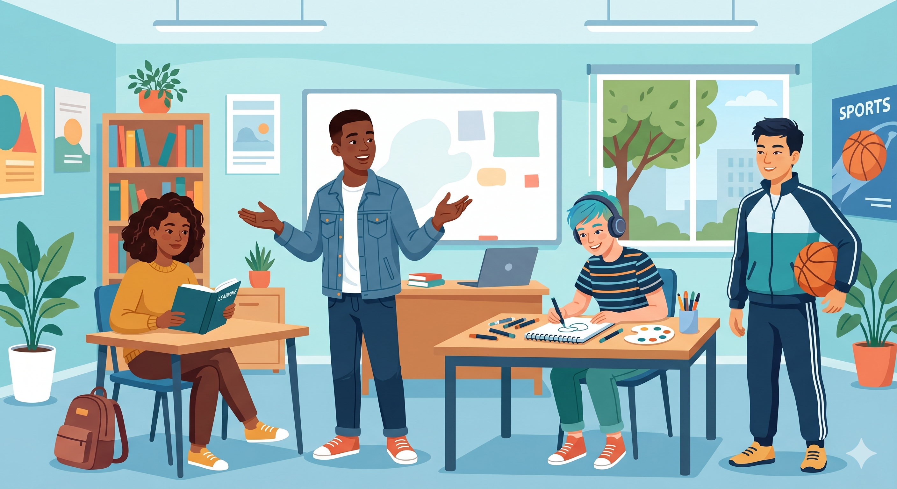

Unit 1
The Way We Are – Stereotypes and Behavior
Explore how people describe personality, behavior, and stereotypes. Learn how to talk about the way people act, think, and interact in different situations.
- Describing personality and behavior
- Talking about stereotypes carefully
- Explaining how people usually act